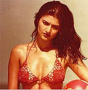

Kamal Hassan, who
turned 50 on Sunday (7 November 04), is exulting over two major hits
- "Virumaandi" and "Vasool Raja M.B.B.S." - this year.

He says his
life is a lot more comfortable as he is able to see his daughters
fairly regularly, following his divorce from Sarika.
"I now have a smile on my face and it's showing in my films," he told
in an interview.
As for the new lady in his life, he said: "I'm very happy and peaceful
with her. In fact this is my most peaceful relationship ever with
a woman."
Excerpts from the interview:
First "Virumaandi" and now "Vasool
Raja", two hits this year.
Both very welcome. "Vasool Raja" is even bigger than "Virumaandi",
though cinematically it isn't a step ahead. I am not sure if "Vasool
Raja" is a regression or just a status quo for me. I've done this
sort of a thing before.
As my own critic, I feel I should move ahead. But let's not go into
No. 1 or No. 2. I'm looking at the larger picture. Both films have
put me in a bargaining position. I want my output to increase. I think
I'm a bit slow. There'll be more films from me, and hopefully, they'll
take me forward.
Are you looking at a less commercial
kind of cinema?
All my films, even "Nayakan" and "Thevar Magan", are commercial. Yes,
perhaps "Abhay" was a little experimental. But that was my own production.
Whenever I do something different, it'll have to come from Raj Kamal
Films.
The film that I'm now making in Hindi and Tamil will push the envelope.
Bharat Shah will be part of the project. We're getting together again
after "He Ram". I'm also buying the rights of a romantic Spanish film
"Tempus Fugit" by Enrique Folch that I want to remake. When I asked
the director for the rights he was surprised. He thought they just
re-made films in India without permission.
How do you feel about your life
right now?
Much much more comfortable. It's like I've taken a vapour elation.
I can breathe easy. I feel rejuvenated. I feel relaxed. I am able
to meet my elder daughter Shruti who's in Chennai every day. I see
my younger daughter Akshara only once a month. She lives in Mumbai
with her mother. I was finding it hard to be normal without access
to my daughters. I now have a smile on my face and it's showing in
my films.
You have a new lady in your life?
Yes. Everyone in Chennai knows about her. I'm very happy and peaceful
with her. In fact this is my most peaceful relationship ever with
a woman. Ever since my mom, who was more than three times my age,
I'm used to volatile women in my life.
Gradually, my life is returning to an even keel. "Vasool Raja" seemed
fated to be a hit even before it was released. After a long time,
I was paid my full amount. But don't worry, I'll pump it back to what
I love the most: movies.
How did "Vasool Raja" come to you?
My friend Vidhu Vinod Chopra, the producer of "Munnabhai M.B.B.S."
was very confident about the remake. He insisted I do the remake.
He asked me to do it for him. He has been asking me to do a film from
the time he made his first feature "Saza-e-Maut". Somehow it never
worked out before. I'd tell him that one set can't hold two eccentrics.
I couldn't say no to him this time. But my biggest reason to do "Vasool
Raja" was that it became the property of L.V. Prasad's grandson.
Prasadji and I go back a long long way. Among other things, he produced
my first Hindi film "Ek Duuje Ke Liye". If I said no to his grandson,
I'd have had Prasad's ghost to deal with.
Why were you reluctant to do "Vasool
Raja"?
Because I've done several such comedies. But I guess nothing succeeds
like success. Before I said yes to it I thought a lot about it because
I knew "Vasool Raja" wouldn't take me anywhere I haven't gone before.
When I returned from a holiday in the US, I said, 'Ok give me the
money. I'll do it'.
Everyone around me was surprised. I was supposed to start my project
"KG" with director Singeetham Srinivasa Rao. That's what I'm working
on now. I told "Vasool Raja" director Saran that changes would've
to be made in the remake. He thought otherwise. He thought my performance
would automatically bring a logistic of its own into the project.
Otherwise the director was sure he wanted to retain the qualities
in "Munnabhai" which made it work in Hindi. I told the director to
be sure of what he wants. Because this time, my contribution was going
to be nothing more than walking into the costumes section and walking
to the set. And that's exactly what I did. I've contributed to "Vasool
Raja" only as an actor.
There's an impression that you take
an interest in every department.
Only if it's asked of me. Otherwise, how do you think I produce all
those failures (laughs)? Sometimes, some films I don't contribute
to in any capacity except as an actor are successes. Like "Sahalakala
Vallavan", where I was just an actor and a stunt-coordinator.
How did you hit on the language
to replace the "Bambaiyya" in "Munnabhai"?
Oh, I had to go back to the Madras slang that I'd done in approximately
24 films before. What I've done in "Vasool Raja" is like Nana Patekar
doing a Marathi accent. Otherwise, in spirit, the two films remain
the same.
I've played my character as a dull, uneducated, slightly dim witted
guy, nothing like what Sanjay Dutt has done. I haven't attributed
great intelligence to the character. But he has tremendous compassion
for the underdogs. "Munnabhai" is a very simple tale. It's like the
"Ramayan". Each rendering brings out new relevance. It all depends
on where the accents are put.
Is this the first Hindi film that
you've done in Tamil?
No I've done several. I was in the Tamil remake of Manmohan Desai's
"Chacha Bhatija" And the biggest debacle of my career was a Tamil
version of Gulzar's "Koshish". I looked like such a wimp in the film!
It was like a school play with me playing the dad. It was directed
by a late friend of mine D.N. Balu.
We both redeemed ourselves when he remade Raj Kapoor's "Awara" with
me in the lead. When he went to ask Raj saab for the rights, the great
man replied: "I don't sell my film's rights. You go ahead and make
it. I'm sure it'll be different." So sweet. I was so moved. I've always
been a great fan of Raj Saab. And we were both fans of Charlie Chaplin.
And now a docu-profile on Chaplin being made by an Australian woman
will feature me.
Why did the docs in Tamil Nadu get
antsy about the title "Vasool Raja M.B.B.S."?
Simply for nothing! It was so so silly. The honourable judge told
them not to waste the court's time. These are educated people and
they should know better. I spoke to some doctor friends and they agreed
there was nothing wrong with the title "Vasool Raja M.B.B.S." The
minor crisis got blown over soon.
Anyway, this title battle was different from my earlier one where
"Sandiyar" had to be changed under pressure to "Virumaandi". Fate
has always been fickle and unpredictable mistress in my life. Why
should that change?